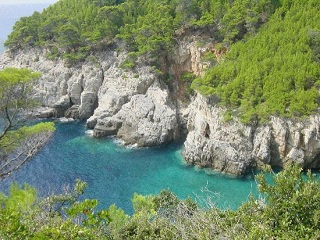
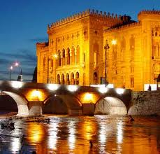
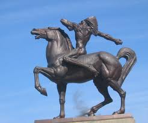
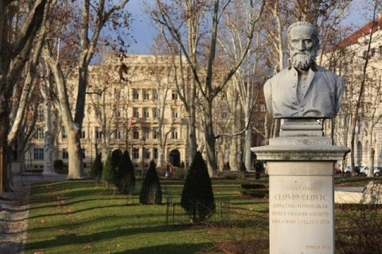

Introduction

La Croatie est réellement une destination "tendance". L'attraction qu'elle exerce sur les touristes du monde entier s'explique d'abord par son climat exceptionnel et son magnifique littoral. Mais, en dehors du cliché de carte postale, la Croatie est un pays fascinant, à bien des égards.
Paysages

Il faut bien avouer que la Croatie, c'est d'abord d'incroyables paysages. Même si la côte dalmate et ses îles laissent un souvenir impérissable, les paysages croates ne se réduisent pas à cela. On trouve également de superbes montagnes, de majestueuses forêts et de vertes campagnes. Bien consciente de cet atout majeur, la Croatie a créé huit parcs nationaux. Celui qui englobe les lacs de Plitvice, près de Zadar, est certainement le plus étonnant et le plus beau.

Identité croate
Les Croates possèdent une identité propre. Ils se différencient de leurs voisins des Balkans par leur conception de la vie, résolument occidentale. Leur culture, teintée d'exubérance méditerranéenne et de chaleur d'Europe centrale, est réellement passionnante. Voyager en Croatie, c'est partir à la découverte d'un peuple accueillant et festif.
Patrimone architectural

Les invasions successives qu'a connues la Croatie ont permis la création d'un patrimoine architectural exceptionnel. Romains, Vénitiens et Autrichiens lui léguèrent de superbes monuments. Des cités comme Pula, ou Dubrovnik vous séduiront par leurs richesses du passé. Les musées croates veillent à conserver ces précieux vestiges archéologiques.
Tradition artistique

A ces merveilles historiques s'ajoute une tradition artistique profondément ancrée dans le cœur des Croates. A la Renaissance, le pays compta l'une des plus grandes écoles d'art sacré. Plus tard, la Croatie vit naître Ivan Mestrovic (1883-1962), célèbre sculpteur du XXe siècle.
Evènements culturels

Aujourd'hui, la vie du pays, et plus particulièrement de Zagreb, est rythmée par des évènements culturels au rayonnement international. Les hommages rendus au cinéma d'animation, au jazz ou au folklore sont quelques illustrations du formidable essor artistique de la Croatie.
Résumons un peu :
Un peuple fascinant, une nature préservée, un patrimoine historique exceptionnel et une effervescence artistique. Alors, c'est pour quand le départ ?